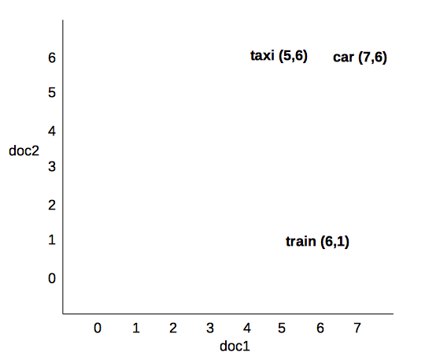
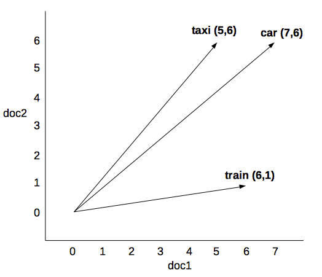

Análisis semántico vectorial
Contents
6. Análisis semántico vectorial#
Esta sección es todavía un borrador. En unos días tendréis el texto definitivo.
6.1. Índice#
Introducción a los modelos semánticos vectoriales.
Estudio de caso: topic modeling.
6.2. Lectura obligatoria:#
Peter D. Turney y Patrick Pantel (2010) “From Frequency to Meaning: Vector Space Models of Semantics” en Journal of Artificial Intelligence Research, 37, págs. 141-188. DOI: https://doi.org/10.1613/jair.2934
https://www.jair.org/index.php/jair/article/view/10640
https://www.jair.org/index.php/jair/article/view/10640/25440
6.3. Objetivos#
En este tema se expone la semántica distribucional, modelo semántico en el que se basan los actuales sistemas de deep learning. Tras definir la semántica distribucional, se mostrará cómo se puede representar el significado mediante vectores, los principales factores que determinan la representación vectorial y finalmente los conceptos de distancia y similitud textual.
6.4. Introducción#
La semántica vectorial es un aproximación formal a la semántica de las lenguas naturales. A diferencia de otros modelos computacionales, el formalismo está basado en espacios vectoriales y álgebra linea; y la interpretación de un texto se expresa en términos geométricos de distancia y similitud (Widdows 2004).
Desde un punto de vista lingüístico, el modelo semántico vectorial representa el significado distrubucional de las palabras. Como se comentará luego, el significado distrubucional es aquél que podemos derivar a partir del contexto en el que una palabra es utilizada. En este modelo, el signficado no es una unidad atómica como en lógica forma ni está definido en un diccionario, sino que es el propio uso de cada palabra en los diferentes contextos donde suele aparecer.
6.5. Origen computacional#
La aplicación de modelos vectoriales para procesar texto proviene del área llamada Recuperación de información (Information Retrieval). En esta área se desarrollan sistemas que, dada una consulta, recupera un conjunto de documentos ordenados de mayor a menor relevancia. El producto más conocido desarrollado en esta área son los buscadores de internet.
Para determinar la relación de la consulta (conjunto de palabras) con los documentos, éstos se representan mediante una matriz término-documento. En este matriz, cada palabra está representada por su relevancia en cada documento (por ejemplo, mediante su frecuencia). Así, dada una palabra (en la cosultad), se pude derivar en qué documentos esa palabra es más relevante. Estos modelos se llaman tambien ``modelos de bolsa de palabras’’ (bag of words) porque las palabras se tratan como un conjunto sin orden ni relación entre ellas. En su estado mas básico se ignora la información categorial, sintátictca, etc. del texto.
En esta matriz, por tanto, cada columna representa un documento y cada línea una palabra o término. El valor de cada celda es la relevancia del término o palabra en el documento. Aquí se pueden aplicar varios fórmulas para determinar esa relevancia, que se verán después. La más básica sería la frecuencia relativa del término en el documento. De esta manera, cada columna es un vector que representa un texto, y cada línea es un vector que representa los contextos de aparición de una palabra (cada documento es aquí un contexto de uso). La siguiente matriz representa las frecuencias absolutas de las palabras de dos documentos (doc1 y doc2), cada uno con tres palabras.
doc1 \(= \{casa, madera, mesa\}\)
doc2 \(= \{papel, rama, madera\}\)
Doc 1 Doc 2
casa 1 0
madera 1 1
mesa 1 0
papel 0 1
rama 0 1
De esta tabla se obtiene la siguiente matriz D:
De esta manera, los documentos ahora está representado como dos vectores:
\(\vec{doc1} = \{1 1 1 0 0\}\)
\(\vec{doc2} = \{0 1 0 1 1\}\)
Y cada palabra o término está representado con su vector contextual:
\(\vec{casa} = \{1 0\}\)
\(\vec{madera} = \{1 1\}\)
\(\vec{mesa} = \{1 0\}\)
\(\vec{papel} = \{0 1\}\)\
\(\vec{rama} = \{0 1\}\)
6.6. Fundamentos lingüísticos#
Los modelos semánticos vectoriales asumen básicamente tres propuestas teóricas (Clarke 2011):
La idea de Wittgenstein (1953) de que “meaning just is use” (Wittgenstein 1953);
El concepto de collocation de Firth (1957) y su idea de que
“you shall know a word by the company it keeps”;
La hipótesis distribucional de Harris (1968), según la cual:
“words will occur in similar contexts if and only if they have similar meanings”.
Todo ello se engloba dentro del concepto de “significado distribucional”. Este, por tanto, es el significado que una palabra asume cuando se usa en un contexto concreto y queda determinado a partir de las palabras de ese contexto con las que aparece. Esta inferencia semántica (determinar el significado de una palabra a partir de las palabras del contexto) es algo que hacemos constantemente. Mira las siguientes oraciones, ¿qué significado tiene XXX en cada una?
Mañana iré al XXX a firmar la hipoteca, y ya de paso sacaré dinero del cajero.
He intentado ponerme los XXX de mi hermano pero me vienen pequeños: mis pies son muy grandes y necesito una talla más.
6.7. Representación vectorial del significado#
El vector de una palabra como se ha mostrado antes representa el significado distribucional de una palabra ya que captura la relevancia de esa palabra (o término o token o lema, según se quiera llamar) en cada uno de los contextos (en este caso documentos) que forman la colección. Así, en la siquiente matriz término - documento:
doc1 doc2
car 7 6
taxi 5 6
train 6 1
el significado de cada palabra sería el vector contextual:
\(car = (7,6)\)
\(taxi = (5,6)\)
\(train = (6,1)\)
Esto se puede representar en un espacio euclídeo (plano o lineal) mediante coordenadas cartesiana: los valores del vector se proyectan en los ejes de coordenadas, siendo la abscisa \(x\) el documento 1 la ordenada \(y\) el documento 2.


Esto en un plano cartesiano de dos dimensiones. Si la colección está formada por \(n-\) documentos, obtendríamos un espacio \(n\)-dimesionales o multidimensionales en el que cada dimensión es un posible contexto.
Para que este modelo vectorial represente el significado real de las palabras, hay que modelar bien:
la representación del contexto (columnas o dimensiones),
la representación de las palabras (filas de la matriz)
los valores o pesos de cada palabra en cada contexto.
6.7.1. Representación del contexto#
Cada contexto de la palabra será una dimensión de la matriz. El problema es cómo deliminar este contexto: ¿cuántas palabras forman el contexto?, ¿dónde está el límite del contexto?
En el modelo de matriz término-documento que se utiliza en recuperación de información el contexto es todo el documento porque son documentos lo que quieren recuperar, pero se puede limiar a recuperación de pasajes, párrafos, etc. Otras opciones con motivación lingüística podrían ser:
la oración,
una ventana deslizante (un cojunto de \(n\) palabras delante y detrás de la término),
el párrafo o cualquier otra unidad textual,
el capítulo,
etc.
Por otro lado, además de la matriz término-documento que hemos visto (donde las columnas representan documentos y las filas palabras), se puede crear otro tipo de matriz: la llamad matriz de co-ocurrencias o matriz término-término. En estas matrices (normalmente cuadradas), tanto las columnas como las filas representan palabra, y los valores la relación entre esas dos palabras. Por ejemplo, en cuántos contextos aparecen esas dos papalabras, como en el siguiente caso:
red readable blue
car 5 0 1
book 3 6 0
Según esta matriz, la palabra “car” aparece el mismo contexto de la palabra “red” en cinco ocasiones, no coincide nunca con la palabra “readable” y solo en una ocación con la palabra “blue”. “book”, por su parte, aparece tres veces en el mismo contexto de “red”, sies en el mismo contexto de “readable” y ninguna con “blue”. En ocasiones estas matrices son cuadradas porque tienen los mismo términos en las filas y en las columnas.
Se pueden plantear otros tipos de matrices. Turne y Pantel (2010), por ejemplo, plantean una matriz Pair-Pattern donde las filas son parejas de palabras \(X:Y\) (“carpenter:wood”) y las columnas son relaciones entre palabras co-ocurrentes (“X cut Y”).
Sea como sea el tipo de matriz, es muy relevente dónde se sitúa el límite del contexto (el documento, el párrafo, la oración…)
6.7.2. Representación de las palabras#
Hasta ahora hemos estado
Según vimos en sesiones anteriores:
Token
Raíz (stem)
Lemas
Lema + Categoría Gramatical
Filtro stopwords
Sólo nombres (o sólo verbos, o sólo adjetivos, etc.)
Lema + Función sintáctica
etc.
Requieren pre-proceso del corpus con técnicas de PLN vistas con anterioridad.
6.7.3. Cálculo de los valores o pesos#
Representación cuantitativa de la relevancia (peso) que tiene la palabra en cada contexto.
Frecuencias simples y relativas: número de veces que la palabra aparece en el contexto, normalizado por el tamaño del contexto.
Problemas:
Depende del tamaño del contexto.
No discrimina la importancia real de cada palabra en el contexto.
El [hapax legomenon](https://en.wikipedia.org/wiki/Hapax_legomenon)
6.7.3.1. TF/IDF: term frequency / inverse document frequency (Sparck Jones, 1972)#
Idea intuitiva: palabras de uso común que aparecen con alta frecuencia en muchos contextos no son discriminativas ni relevantes. TF/IDF intenta dar más peso a las palabras específicas de cada documento.
Term frequency (tf): frecuencia de una palabra en un documento dado.
Document frequency (df): cantidad de documentos donde aparece una determinada palabra.
Inverse document frequency (idf): \(N/df\) donde N = cantidad total de documentos.
Así, el valor tf-idf (\(w\)) de una palabra \(t\) en un documento \(d\) es:
6.7.3.2. Matriz dispersa y matriz densa#
Dadas las caracterísiticas de los idiomas, este tipo de matrices son siempre muy dispersas, en las que la mayoría de los valores con cero.
Sparse matrix: la mayoría de los valores son ceros.
Para solucionar esto se reduce la dimensionalidad de la matriz, generando así matrices densas (dense matrix) donde la mayoría de los valores no son ceros pero manteniendo las relaciones semánticas entre las palabras (los valores semánticos).
Latent semantic analysis: descomposición de la matriz dispesar en valores singulares (singular value decomposition), generando una matriz densa de 300 dimensiones. Se considera que mantiene relaciones semánticas “latentes”. Origen de los word embeddings que veréis en próximos temas.
6.8. Interpretación semántica: distancia y similitud.#
La interpretación en esta aproximación vectorial a la semántica distribucional se realiza por relaciones de similitud entre palabras o documentos. La similitud se calcular según la distancia entre los vectores en el espacio vectorial: a menor distancia entre vectores, mayor similitud semántica.
Así, desde un punto de vista lingüístico, dos vectores (de palabras) serán similares en la medida que tengan valores relevantes en los mismos contextos.
Cualquier aplicación de semántica vectorial debe pensarse en términos de similitudes (entre palabras, grupos de palabras, textos, etc.).
Hay diferentes medidas. Las más utilizada es la similitud del coseno, que mide el ángulo entre dos vectores ambos con origen en 0,0.
{height=”10cm”}
6.8.1. Conclusiones#
Representación formal del significado distribucional.
El significado se represente mediante vectores dentro de un espacio semántica vectorial.
El vector está formado por el peso de la palabra en cada uno de los contextos (documentos, oraciones, etc.)
El proceso de interpretación se basa en la distancia entre vectores: similitud.
6.9. Situación actual#
De aquí derivan los word embeddings que, junto con las redes neuronales, han revolucionado el campo del PLN. De todo esto os hablará el prof. Juan Antonio Pérez Ortiz en las próximas sesiones.
6.10. Herramientas y recursos#
Para crear espacios vectoriales y calcular similitudes:
6.11. Apéndice. Estudio de caso.#
Extracción de topics con Topic Modeling.
6.12. Bibliografía#
David M. Blei (2012) “Probabilistic topic models” en Communications of the ACM vol. 55 (4), April 2012. Doi:10.1145/2133806.2133826 https://dl.acm.org/doi/10.1145/2133806.2133826
Juravsky y Martin (2020) Speech and Language Processing. https://web.stanford.edu/~jurafsky/slp3/ (Caps. 12-14)
Ferrone Lorenzo y Zanzotto Fabio Massimo (2020) “Symbolic, Distributed, and Distributional Representations for Natural Language Processing in the Era of Deep Learning: A Survey” en Frontiers in Robotics and AI, pags, 153. DOI 10.3389/frobt.2019.00153 https://www.frontiersin.org/article/10.3389/frobt.2019.00153
Navarro Colorado, Borja (2021) “Sistemas de anotación semántica para corpus de español” en Giovanni Parodi, Pascual Cantos & Lewis Howe (Editores) The Routledge Handbook of Spanish Corpus Linguistics Routledge (en prensa).
D. Widdows (2004) Geometry and meaning, CSLI.